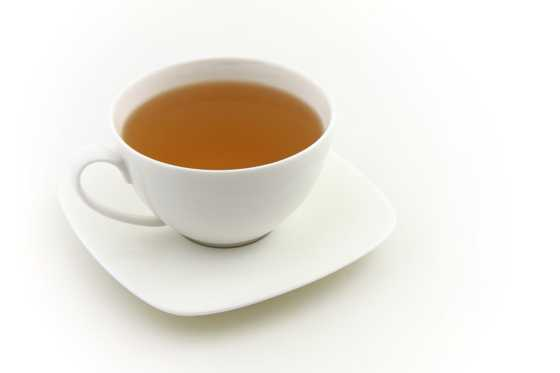
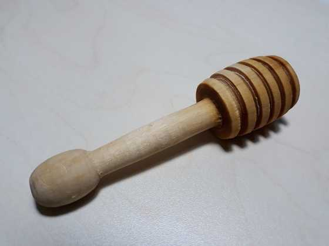
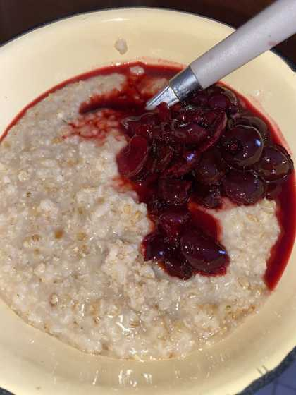
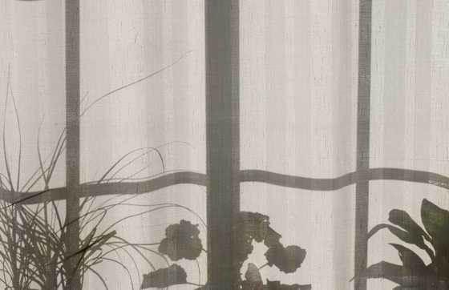
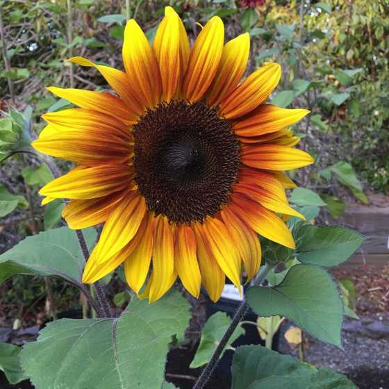
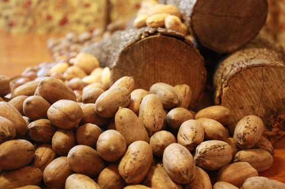

制作側の連想
ドリップ用スタンドを、配置図にしてみる
このサイトは、布でこす抽出に使う木のスタンドを図にしたつもりで作りました。六つの部位に番号をふり、上の図と並べています。制作側の連想で、お店の理念・由来とは無関係です。実際の器具の仕様を示すものでも、お店の提供内容を示すものでもありません。
凡例
六つの部位
- 1ネル粉をのせて湯を通すための、起毛した布のフィルター。
- 2リングネルの口を広げて留めておく、金属の輪。
- 3アームリングを支柱から横へ張り出す、水平の腕木。
- 4支柱台座から真上に立ち上がる、縦の棒。
- 5台座全体を安定させる、木の土台。
- 6受け台下に器を置くための、一段低い棚板。
ギャラリー(イメージ)
パンと木の質感の写真


写真はイメージです。お店のものではなく、お店で提供している商品を示すものでもありません。
写真の帯(イメージ)
色と形のコレクション



ご案内
お店のこと(確認できたものだけ)
| 所在地 | 〒514-0008 三重県津市上浜町3丁目98-1 |
|---|---|
| 電話 | 準備中 |
| 営業時間 | 準備中 |
| 定休日 | 準備中 |
| ご予約 | 準備中 |
| 駐車場 | 準備中 |
| SNS | Instagram @168cafe_2023 |